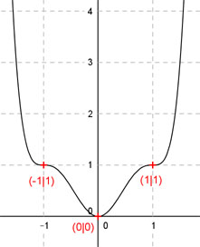

Aufgabe 110 Der Graph einer ganzrationalen Funktion 6. Grades berührt die x-Achse im Nullpunkt, und hat in (1|1) und (-1|1) Wendepunkte mit waagerechten Tangenten. Wie lautet seine Funktionsgleichung?  Allgemeine Form einer ganzrationalen Funktion 6. Grades: f(x) = ax6 + bx5 + cx4 + dx3 + ex2 + fx + g f’(x) = 6ax5 + 5bx4 + 4cx3 + 3dx2 + 2ex + f f’’(x) = 30ax4 + 20bx3 + 12cx2 + 6dx + 2e 8 Bedingungen : (eine mehr als nötig) 1. Berührt die x-Achse im Nullpunkt bedeutet zum einen: f(0) = 0 --> a * 06 + b * 05 + c * 04 + d * 03 + e * 02 + f * 0 + g = 0 --> g = 0 2. Berührt die x-Achse im Nullpunkt bedeutet zum anderen: f’(0) = 0 --> 6a * 05 + 5b * 04 + 4c * 03 + 3d * 02 + 2e * 0 + f = 0 --> f = 0 3. Hat in (1|1) einen Wendepunkt mit waagerechter Tangente (Sattelpunkt) bedeutet erstens: (f = 0 und g = 0 eingesetzt) f(1) = 1 --> a * 16 + b * 15 + c * 14 + d * 13 + e * 12 = 1 --> a + b + c + d + e = 1 I 4. Hat in (1|1) einen Wendepunkt mit waagerechter Tangente (Sattelpunkt) bedeutet zweitens: (f = 0) f’(1) = 0 --> 6a * 15 + 5b * 14 + 4c * 13 + 3d * 12 + 2e * 1 = 0 --> 6a + 5b + 4c + 3d + 2e = 0 II 5. Hat in (1|1) einen Wendepunkt mit waagerechter Tangente (Sattelpunkt) bedeutet drittens: f’’(1) = 0 --> 30a * 14 + 20b * 13 + 12c * 12 + 6d * 1 + 2e = 0 --> 30a + 20b + 12c + 6d + 2e = 0 III 6. Hat in (-1|1) einen Wendepunkt mit waagerechter Tangente (Sattelpunkt) bedeutet erstens: (f = 0 und g = 0 eingesetzt) f(-1) = 1 --> a * (-1)6 + b * (-1)5 + c * (-1)4 + d * (-1)3 + e * (-1)2 = 1 --> a - b + c - d + e = 1 IV 7. Hat in (-1|1) einen Wendepunkt mit waagerechter Tangente (Sattelpunkt) bedeutet zweitens: (f = 0) f’(-1) = 0 --> 6a * (-1)5 + 5b * (-1)4 + 4c * (-1)3 + 3d * (-1)2 + 2e * (-1) = 0 --> - 6a + 5b - 4c + 3d - 2e = 0 V 8. Hat in (-1|1) einen Wendepunkt mit waagerechter Tangente (Sattelpunkt) bedeutet drittens: f’’(-1) = 0 --> 30a * (-1)4 + 20b * (-1)3 + 12c * (-1)2 + 6d * (-1) + 2e = 0 --> 30a - 20b + 12c - 6d + 2e = 0 VI I + IV a + b + c + d + e = 1 a - b + c - d + e = 1 ------------------------ 2a + 2c + 2e = 2 VII III + VI 30a + 20b + 12c + 6d + 2e = 0 30a - 20b + 12c - 6d + 2e = 0 ----------------------------- 60a + 24c + 4e = 0 VIII I * (-5) + II -5a - 5b - 5c - 5d - 5e = -5 6a + 5b + 4c + 3d + 2e = 0 ----------------------------- a - c - 2d - 3e = -5 IX I * 20 + VI 20a + 20b + 20c + 20d + 20e = 20 30a - 20b + 12c - 6d + 2e = 0 --------------------------------- 50a + 32c + 14d + 22e = 20 X IX * 7 + X 7a - 7c - 14d - 21e = -35 50a + 32c + 14d + 22e = 20 ---------------------------- 57a + 25c + e = -15 XI VII * (-2) + VIII -4a - 4c - 4e = -4 60a + 24c + 4e = 0 -------------------- 56a + 20c = -4 XII VII + XI * (-2) 2a + 2c + 2e = 2 -114a - 50c - 2e = 30 ---------------------- -112a - 48c = 32 XIII XII * 2 + XIII 112a + 40c = -8 -112a - 48c = 32 ----------------- -8c = 24 |:(-8) c = -3 c = - 3 in XII eingesetzt: 56a + 20 * (-3) = -4 56a - 60 = -4 |+60 56a = 56 |:56 a = 1 a = 1 und c = -3 in XI eingesetzt. 57 * 1 + 25 * (-3) + e = -15 57 - 75 + e = -15 -18 + e = -15 |+18 e = 3 a = 1 und c = -3 und e = 3 in IX eingesetzt: 1 - (-3) - 2d - 3 * 3 = -5 1 + 3 - 2d - 9 = -5 -2d - 5 = -5 | +5 -2d = 0 | :(-2) d = 0 Gesuchte Funktionsgleichung: f(x) = x6 - 3x4 + 3x2